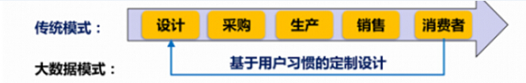
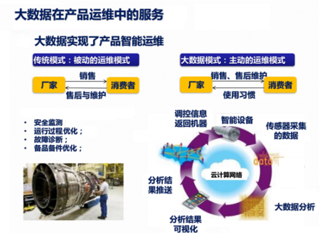
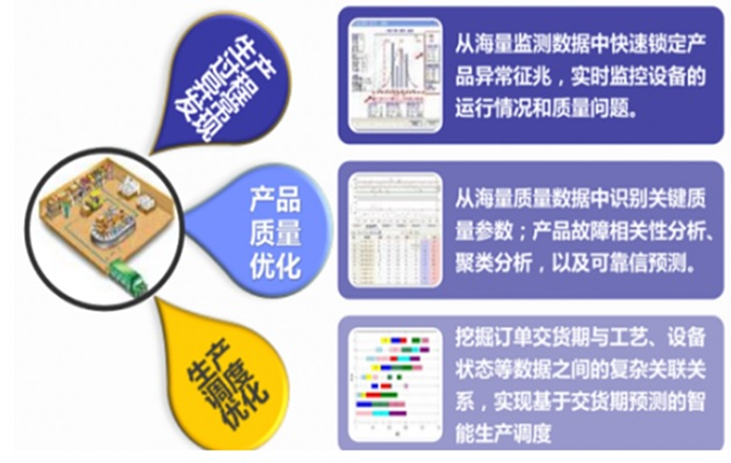
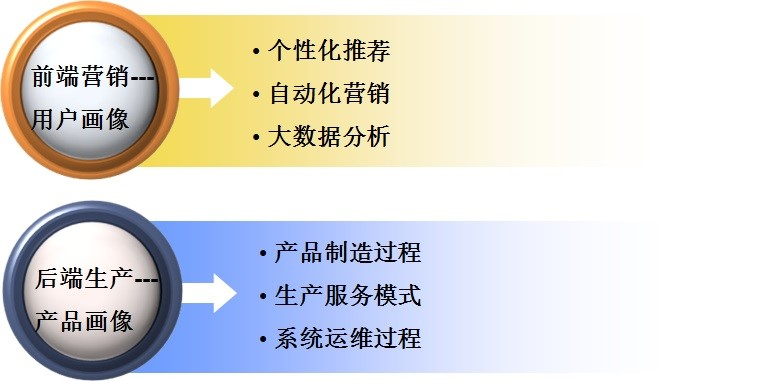

制造业大数据应用面临的挑战
制造业存在着260字节的数据，其存储的数据体量远远超出其他行业，大数据已经成为以中国制造2025，德国工业4.0，美国工业互联网为核心的新一轮产业革命的核心。
传统制造行业在利用大数据技术，充分挖掘海量数据价值方面主要面临三个方面的问题:
1、 传统制造业能否利用大数据技术充分挖掘海量数据自身的价值？
2、 怎样利用这些数据产生的价值？
3、 在哪些环节能够利用大数据带来的价值，最大限度的完成数据变现？
清蓝大数据解决方案
制造业大数据5大方面的分布
1、 产品数据：包括设计、建模、工艺、加工、测试、维护数据、产品结构、零部件配置关系、变更记录等数据内容。
2、 运营数据：包括组织结构、业务管理、生产设备、市场营销、质量控制、生产、采购、库存、目标计划、电子商务等。
3、 价值链数据：客户、供应商、合作伙伴等。
4、 外部数据：经济运行数据、行业数据、市场数据、竞争对手数据等。
5、 个性化定制数据：大规模定制和网络协同的发展，使得个性化定制数据一跃成为消费者张扬个性的载体。
制造业大数据解决方案主要针对的企业类型
作为大数据行业的践行者，清蓝大数据通过提供一整套大数据系统平台解决方案帮助以下几种类型的制造型企业快速转型和成长：
1、 传统3C制造企业，面对互联网公司销售模式和市场战略冲击剧烈，需要转型；
2、 新兴的具有互联网基因的制造企业，IT尤其是大数据技术基础薄弱，需要通过专业大数据公司的技术赋能快速成长；
3、 其他所有需要由经营产品向经营用户转型的企业；
制造业大数据解决方案
清蓝大数据提出了切实可行的解决方案并在实际落地项目中得到了用户的认可，目前，清蓝大数据大数据正在以下三个方面对制造业产生影响:
1、产品设计模式
大数据技术改变了传统制造业的产品设计模式，拉近了生产者和消费者之间的距离，以汽车制造业为例 :
传统模式下，企业内部设计人员的灵感和经验是产品制造的起点，设计师靠猜测消费者的需求偏好完成汽车产品的设计。产品制造商和最终用户之间在产品没有面世之前没有信息交互；
大数据模式下，产品设计链条完全颠倒，基于最终用户习惯的定制设计成为了产品设计的出发点，企业内部的设计人员不再揣度消费者的需求偏好，而是把直接了解真实用户的消费习惯和购物偏好作为产品设计的初衷，通过精准量化用户需求指导设计过程，真正做到了消费者和生产者之间的零距离。

2、 产品智能运维
大数据技术改变了企业传统运维模式，通过智能运维，实现了运维过程变被动为主动：
传统模式下的产品运维都是基于厂家在把产品销售给了最终用户之后，开始产品的售后与维护工作。制造商在运维过程中碰到的所有问题以及所提供的相对应的解决方案都是在被动的等待用户的反馈情况下产生的；
大数据模式下，运维过程不再是被动接收，而是制造商通过主动了解用户的使用习惯完成产品的销售和售后维护工作，维护过程都是通过实际数据进行量化并可视化分析结果，借助大数据分析模型和云计算网络不断使产品制造商的运维过程变得智能化、主动化、可量化。

3、 生产服务模式
大数据技术改变了传统制造行业生产服务的模式，为优化产品制造过程提供了有效方法:
借助大数据系统平台所提供的各类分析预测模型和计算能力，可以快速发现产品生产过程中所存在的各种异常状态并预警给相应人员进行处理；通过产品关键质量参数识别、故障相关性分析、聚类分析以及可靠性预测等手段完成产品质量的优化；借助大数据平台的关联关系分析模型，充分挖掘订单交货期与工艺、设备状态等数据之间的复杂关联关系，用于指导优化生产过程，实现基于交货期预测的智能生产调度。

清蓝大数据解决方案的价值
1、 清蓝大数据通过提供一整套解决方案，借助现有的信息互联网、物联网以及服务互联网使制造业可以实现智能生产；
2、 通过大规模定制，个性化需求分析，借助清蓝大数据大数据平台，可以实现传统制造业向服务业转型；
3、通过大数据领域最新最前沿的新技术，帮助制造行业构建新一代智能工厂；
4、 通过智能设备对消费需求和生成过程产生的海量数据进行分析、判断、决策、调整、控制并继续开展智能生产，生产出高品质的个性化产品，推动制造企业进入创新和变革的新时代。
清蓝大数据大数据制造业案例简介
1、 某家电设备制造商案例
对于家电制造商来说，怎样让家电更懂用户，实现企业“智能家居”战略，最大化提升用户价值，一直是家电制造商们追求的终极目标。
通过清蓝大数据所提供的用户中心大数据平台，充分采集各渠道用户行为数据，建立自有用户画像体系，进行收视行为分析、市场监控、智能推荐等典型大数据应用，实现了用户需求驱动的产品企划，提升了售后服务质量，真正做到了让家电更懂用户。
2、 某移动设备制造商案例
怎样通过智能移动设备获得移动用户的入口数据，借助移动设备平台实现个性化应用的下载和分发，最大化提高用户的粘性是近年来移动设备制造商和运营商们越来越关心的问题。
企业通过搭建清蓝大数据大数据底层技术平台，建立统一的数据采集、整合、处理、消费系统并完成统一数据视图，打通多渠道用户数据，建立用户事实数据库，从而沉淀完成用户标签数据库，建立包括个性化着陆页、个性化类别排序、个性化搜索在内的应用场景，最终提高了用户的忠诚度与用户粘性，最大化地完成了数据变现。
结语
制造型企业主们主要关心整个生产链条的两端：前端用户营销和后端产品生产。前者主要是从了解、分析、经营消费者的角度出发，帮助用户从产品售前、售中、售后的各个环节捕获用户行为、刻画用户特征、完成精准营销，最大化完成产品变现。后者主要是从产品生产过程的不同阶段，包括原材料采集、配件生产、产品故障率分析、故障预测、成品销量预测等围绕产品生产的不同阶段出发刻画出精准的产品画像。

清蓝大数据提供了一整套从关注后端产品生产到前端用户营销在内的解决方案，囊括了不同层级的一系列产品和技术组件，可以帮助我们的用户搭建从底层大数据操作系统平台到上层数据应用的全景视图，充分发挥和挖掘大数据平台给客户带来的巨大潜能和无限价值。